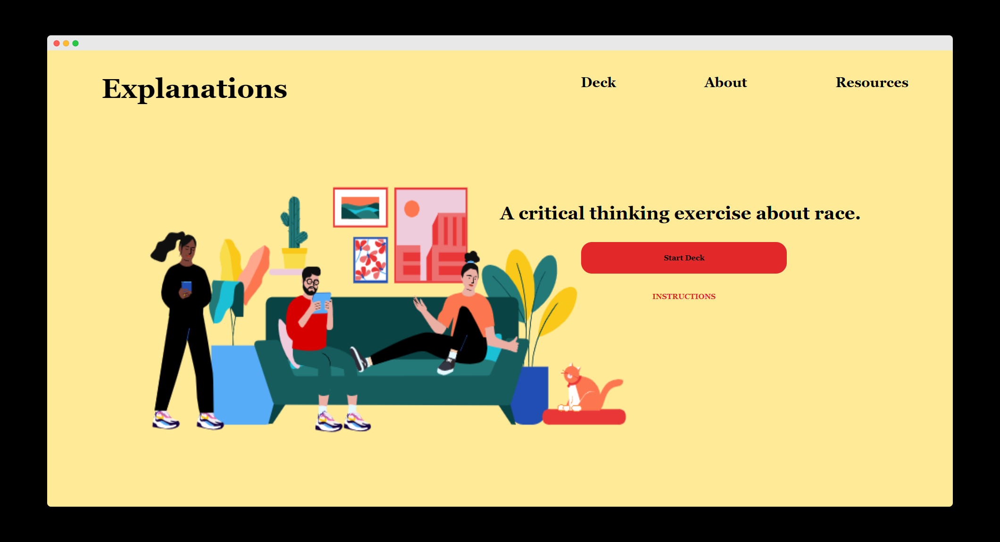

Coverwall generates an album cover wall for a users personal use from the users top Spotify albums.
Tech Stack: React, CSS, Spotify API
01.Brief.
The aim was to create a simple app using the Spotify API in order to get comfortable with the Authorisation
and methodology before jumping into other Spotify based projects.
The project was heavily inspired by the Spotify based webapps often shared on twitter, where users share their
results on the app and compare their results with their followers.
02.Research.
I had never worked with an API that required a user to sign in so I had no idea how to handle authorisation.
So I focused the majority of my research on how to handle user authorisation and how to connect that to a
React app.
My blog post goes in
depth on the reserach and process I went through to build this webapp.
03.Design Concept.
For this project, I really wanted a bold and bright user interface. I initially wanted to use colors that
matched the Spotify color pallete before deciding to go for a yellow, tangerine, black and white color scheme.
I wanted the project to be bright and bold but as simple as possible. I achieved this by keeping descriptions
brief and using bold lettering.
04.Development.
Choosing the Stack - I decided to use React to handle the requests and CSS to style the webapp
Connecting to Spotify to handle authorisation - here I followed the instructions from Spotify's API docs.
Connecting to the Spotify API - I used a Spotify-React wrapper from xxx to fetch the top album data from
the users Spotify.
02.

Explanations.
A critical thinking exercise about race which uses a card game
format to prompt users to engage with social justice issues.
Explanations is a critical thinking exercise about race which uses a card game
format to prompt users to engage with social justice issues.
Tech Stack: JS, SCSS, HTML
01.Brief.
For Explanations the aim was to create a critical thinking exercise that could exist on the web.
The project was modelled after other card games like We're not really strangers. that use
prompts to get people talking about serious topics.
02.Research.
The research was mostly focused on making a card game that can be accessed online while also delivering quality UI.
I started out with cards that flip around when clicked but when I became aware of material design practises, I began the
process of making the cards more user-friendly while also adhering to material design standards.
03.Design Concept.
In terms of design concept, I wanted the design to reflect community. I did this through the use of color and imagery
that had people from different walks of live interacting with each other. I focused on creating a clean and seamless UI for users.
04.Development.
This was a straight-forward development process. I opted for SCSS because it allowed me to do major changes in the design
of the project through the use of variables and mix-ins. It has also allowed maintennace of the site to be much more efficient.
03.
Black Door (In Progress).
A curated directory for things to to in your city. This is an open source project that developers who are
knowledgeable about Cape Town hangouts can contribute to.